Distribuciones de linux
Linea del tiempo
Linus Torvalds
Creó un núcleo para plataformas i386 al que llama Linux. Torvalds entrega su trabajo a la comunidad GNU y a partir de esto, el desarrollo crece de manera ágil, un kernel era precisamente lo que se necesitaba para desarrollar un sistema operativo libre
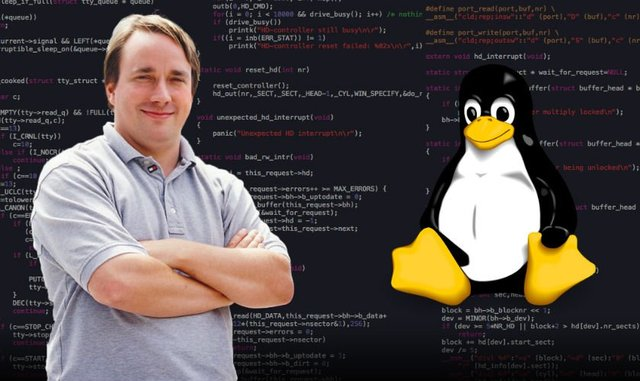
MCC (Interim Linux)
Interim Linux tiene la distinción de haber sido la primera distribución Linux capaz de ser instalada independientemente en una computadora pero no tenía un ambiente gráfico.
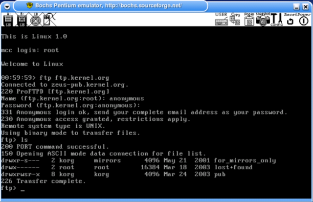
Slackware
Patrick Volkerding decidió modificar SLS haciendo una buena cantidad de mejoras y sobre todo eliminando errores, este fue ya un sistema Linux completo con un software de instalación que permitía elegir lo que quería instalar
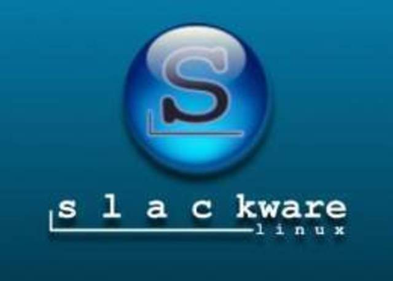
redhat
Una de las distribuciones más importantes de la historia, desarrollada por Red Hat Software Inc. y fundada por Bob Young y Marc Ewing
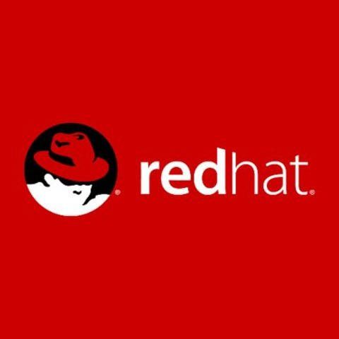
LinuxPPP
México también tuvo una distribución que fue muy popular, desarrollada en 2001 por José Neif Jury, llamada LinuxPPP que estuvo basada en RedHat (la última versión fue la 6.2).
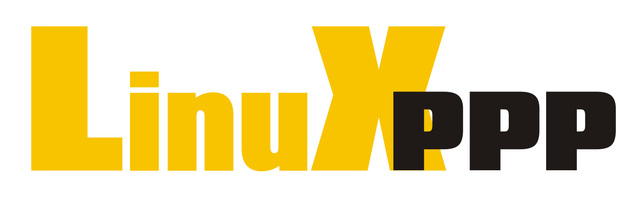
LinEX
Nace la primera distribución de Linux española, LinEx desarrollada en la Junta de Extremadura y marca el inicio del desarrollo de distribuciones Linux por las comunidades autónomas que hoy en día es muy importante y productiva.
Fedora
RedHat cambia a un esquema comercial y termina con el soporte de su distribución, para cumplir con los reclamos de la comunidad que le dio fama por estas acciones, pero sobre todo para beneficiarse de los desarrollos de esta misma comunidad, lanza el proyecto Fedora, la rama libre de su distribución, haciendo libres también algunos de sus desarrollos.
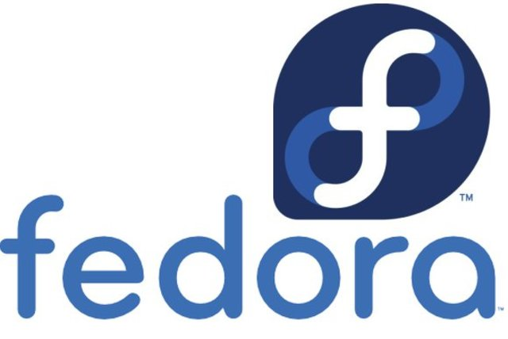
Ubuntu
Una de las distribuciones Linux que mayor éxito y crecimiento ha
tenido, desarrollada por Mark Shuttleworth y la empresa Canonical Ltd., con un financiamiento inicial de 10 millones de dólares. Ubuntu está basada en Debian.
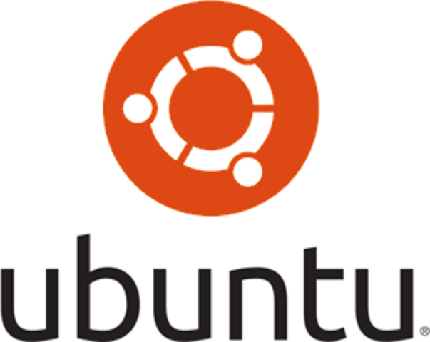
Linux Mint
Basado en Ubuntu, es uno de los más recomendados para todos aquellos que tocan Linux por primera vez. Su entorno de escritorio, Cinnamon, tiene muchas similitudes con el de Windows, y es también uno de los más personalizables.
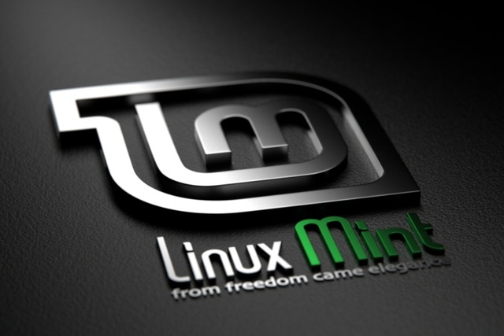
Slax
Es muy útil debido a sus características, como salvar la configuración, y para los usuarios más avanzados se encuentran disponibles las fuentes del sistema y scripts que permiten crear una distro propia basada en Slackware, mediante el sistema Linux Live.
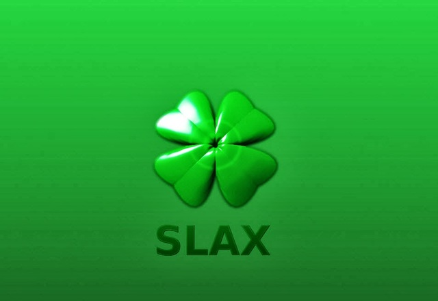
Zorin OS
Distribución también basada en Ubuntu que nació con la intención de ayudar a que el usuario diera el salto a Linux ofreciéndole una interfaz lo más similar posible a Windows.
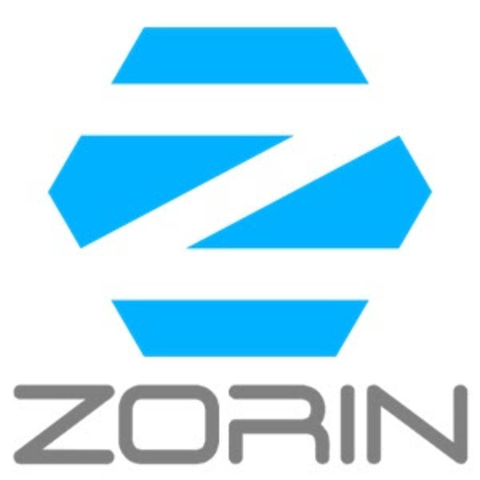
Kali Linux
Utiliza un kernel personalizado con parches de seguridad y tiene soporte para la arquitectura ARM. Kali Linux trae preinstalados más de 600 programas incluyendo Nmap (un escáner de puertos), Wireshark (un sniffer), John the Ripper (un crackeador de passwords) y la suite Aircrack-ng (software para pruebas de seguridad en redes inalámbricas).
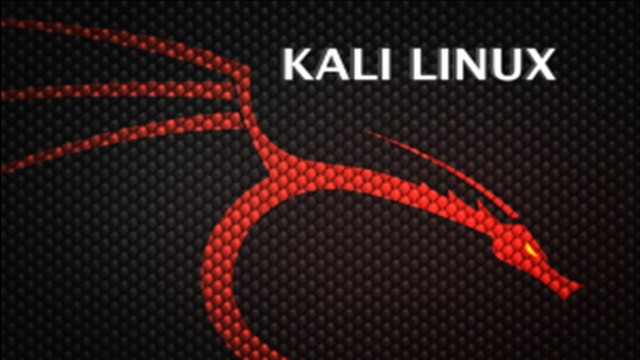